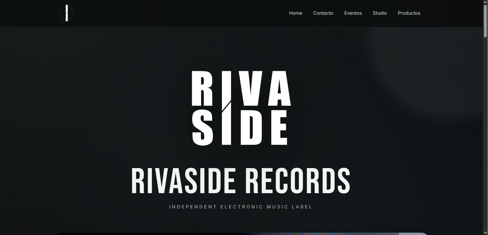
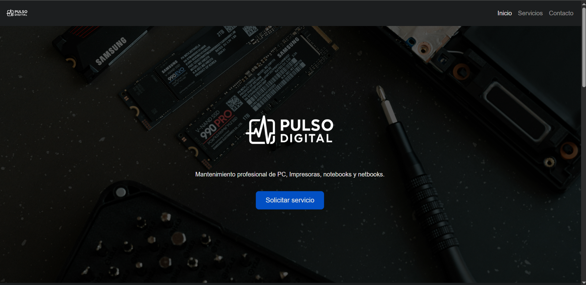
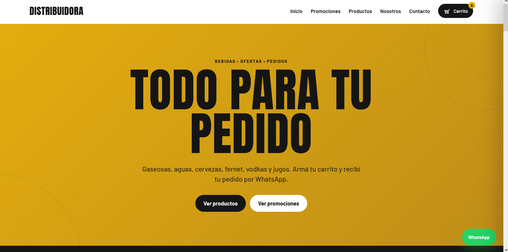
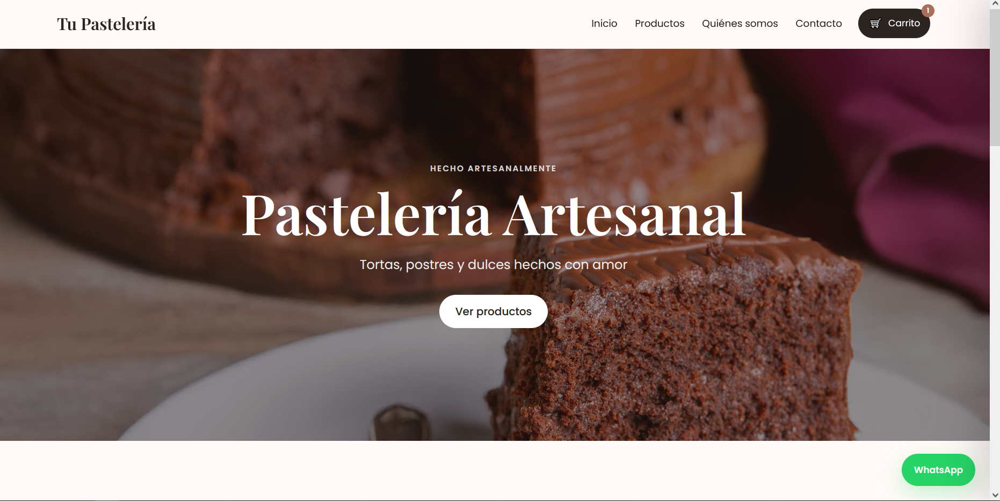
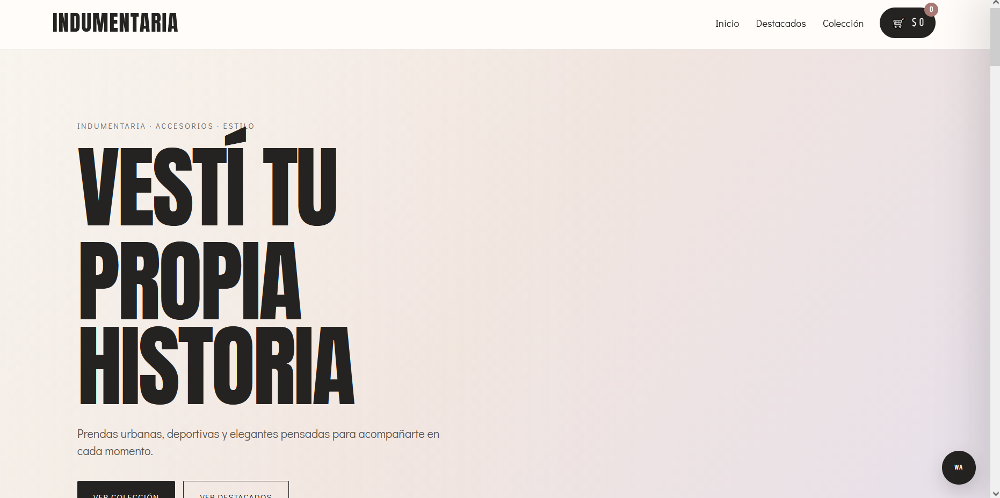

01 / 06WEB MUSICALSITIO WEB
Rivaside Records
Identidad digital para un sello discográfico de música electrónica, con una estética vinculada a su universo musical.
Visitar sitioPULSO DIGITAL · DESARROLLO WEB
Creamos páginas web, tiendas y soluciones digitales que se adaptan a cada pantalla. Diseños pensados para verse bien tanto en una computadora como en un celular.
TRABAJO SELECCIONADO
Cada proyecto responde a una idea diferente. Elegí uno para conocerlo o abrir su versión online.

01 / 06Identidad digital para un sello discográfico de música electrónica, con una estética vinculada a su universo musical.
Visitar sitio
02 / 06Web de presentación de servicios de desarrollo web, soporte tecnológico y soluciones digitales.
Visitar sitio
03 / 06Presentación digital de productos para una distribuidora de bebidas, pensada para facilitar la exploración del catálogo.
Explorar demo
04 / 06Una experiencia visual para presentar productos de pastelería y comunicar la identidad de un negocio gastronómico.
Visitar sitio
05 / 06Propuesta de tienda digital para una marca de ropa, con foco en la presentación de prendas y colecciones.
Explorar demoAplicación de escritorio orientada a la lectura, organización y resumen de documentos PDF.
i Capturas de los sitios publicados. DocuCentral se presenta como proyecto de software de escritorio, sin demo web pública.
UN POCO DE MÍ
La persona detrás de Pulso Digital.
UN POCO SOBRE MÍ
Soy un apasionado de la tecnología desde pequeño. Siempre me dio curiosidad saber cómo funcionan las cosas, encontrar soluciones y convertir ideas en algo real.
Hoy llevo esa curiosidad al mundo de la programación y el desarrollo digital, creando páginas web, sistemas y herramientas que buscan hacerles la vida un poquito más fácil a las personas y los negocios.
También soy productor musical, papá y amante del café. Me gusta crear, experimentar, aprender cosas nuevas y meterme en proyectos que me desafíen. Para mí, tanto la música como la programación tienen algo en común: empiezan con una idea y, con paciencia y creatividad, pueden convertirse en algo increíble.
INSERT COIN · PRESS START
Esto es un poco de lo que podemos hacer. Abrí un minijuego y divertite.
Juegos de demostración creados para el portfolio. No necesitás instalar nada.
PRÓXIMO PROYECTO
Ya sea una web, un sistema o una idea que todavía está tomando forma, escribime y contame qué tenés en mente.